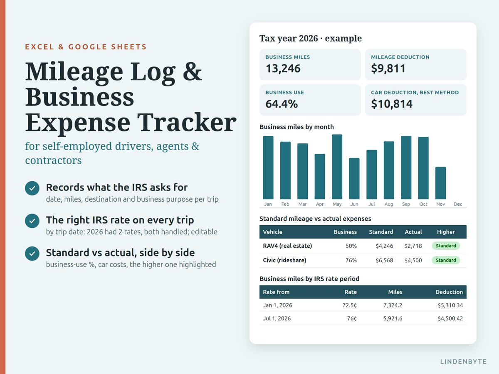
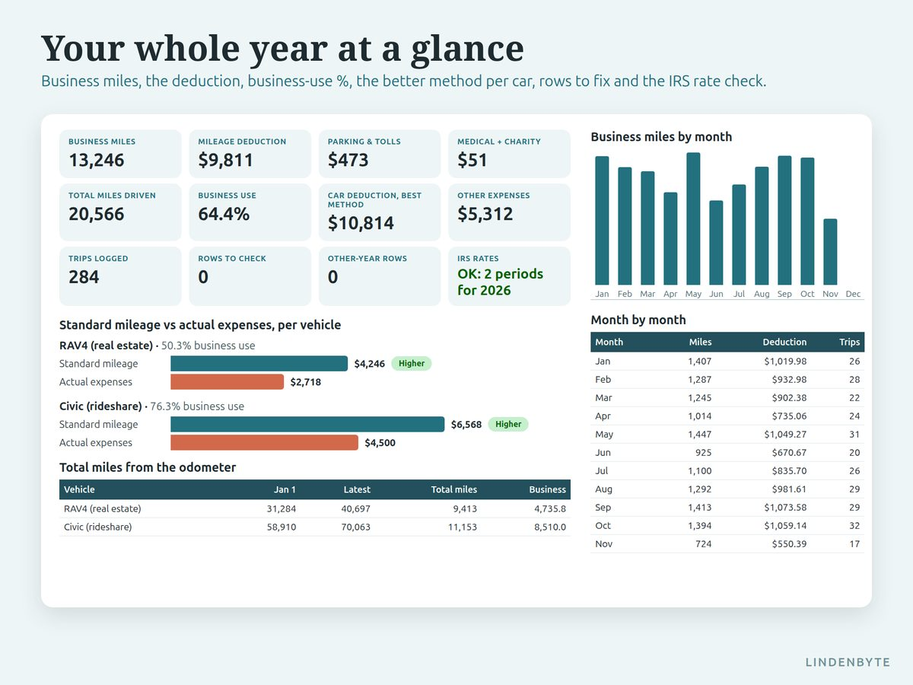
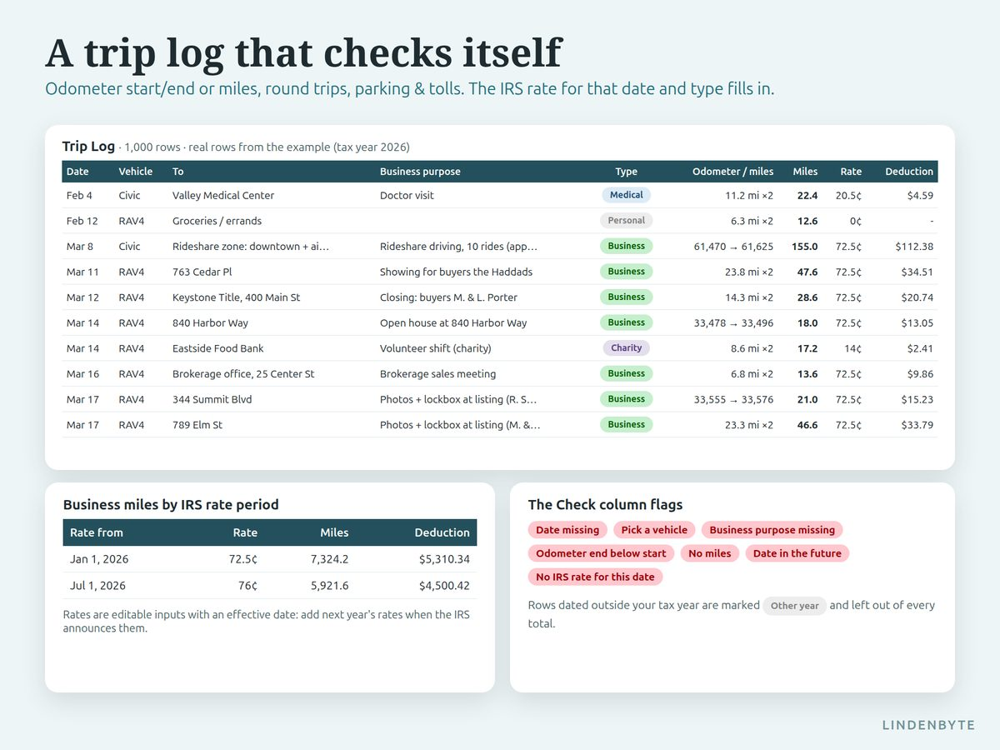

Spreadsheet templates / Mileage Log 2026 & Business Expense Tracker: IRS Mileage Tracker Spreadsheet
Mileage Log 2026 & Business Expense Tracker: IRS Mileage Tracker Spreadsheet
Log every business mile at or near the time you drive it, get the right IRS rate on every trip automatically, and see whether the standard mileage rate or your actual car expenses give the bigger deduction. Made for self-employed people who drive for work: rideshare and delivery drivers, real estate agents, contractors, sales reps, consultants and small-business owners.
Excel and Google Sheets · digital download · no macros

Log every business mile at or near the time you drive it, get the right IRS rate on every trip automatically, and see whether the standard mileage rate or your actual car expenses give the bigger deduction. Made for self-employed people who drive for work: rideshare and delivery drivers, real estate agents, contractors, sales reps, consultants and small-business owners.
What it does
- Trip Log (1,000 trips): date, vehicle, from, to, business purpose (who you met, what for) and type (Business, Medical, Charity, Personal, Commute). Type the odometer start and end OR the miles; mark round trips; add business parking and tolls. Miles, the IRS rate for that date and type, and the deduction fill in. A Check column flags missing dates, vehicles, purposes or miles, an odometer end below the start, future dates and dates without an IRS rate. Rows from another year are marked and left out
- IRS rates by date: the rate table on Settings has an "effective from" date, so a year with a mid-year change works (2026: 72.5 cents per business mile until June 30, 76 cents from July 1). The 2025 and 2026 rates are filled in; you add future years when the IRS announces them
- Vehicle Expenses (400 rows): gas, maintenance, repairs, tires, insurance, registration, lease, loan interest, washes, business parking and tolls, per vehicle
- Summary: per vehicle total miles (from your odometer), business miles and business-use %, then the standard mileage method (miles x rate + parking and tolls + business share of loan interest) and the actual expense method (car costs x business-use % + parking and tolls) side by side, the higher one in green. Plus miles and deductions by purpose, by month, by quarter (handy for quarterly estimated taxes) and by IRS rate period, and other expenses by category
- Other Expenses (300 rows, optional): phone, software, supplies, dues, marketing, meals and more, with a business-use % for mixed-use items and a deductible % per category (meals at 50%)
- Dashboard: business miles, mileage deduction, parking and tolls, medical and charity mileage, total miles, business-use %, the better vehicle deduction, other expenses, trips logged, rows to check, an IRS rate check, a vehicle comparison table and 2 charts
- Settings: your name, the tax year (every total follows it), currency label, the IRS rate table, up to 5 vehicles with odometer readings, and both expense category lists
What's included
One .xlsx file with 7 connected tabs: Start Here, Dashboard, Trip Log, Vehicle Expenses, Other Expenses, Summary, Settings. An example year (a real estate agent who also drives rideshare, 2 cars, about 280 trips, car costs and other expenses) is filled in so you can see how it works; clear it when you're ready.
How it works
- Excel: open the file (Excel 2010 or newer, Windows or Mac).
- Google Sheets: in Google Drive choose New > File upload, then open the file with Google Sheets (or File > Import). A free Google account is enough, and you can log trips from the Sheets phone app.
- Shaded cells are yours to edit; everything else calculates automatically. No macros, nothing locked.
- New tax year: save a copy, change the tax year, clear the logs and type the new odometer readings.
Important
This is a record-keeping tool, not tax or legal advice. The IRS rates included were taken from irs.gov and must be checked and updated by you every year. Depreciation, lease inclusion amounts and vehicle limits are not calculated, so the actual expense method shown can be lower than what you may claim; and the IRS has rules on which method you may use (for example the first year a car is used for business, and leased cars). Medical and charity miles only help if you itemize; commuting is not deductible. Check IRS Publication 463 and ask a tax professional about your situation. Keep your receipts.
FAQ
- Is anything physical shipped? No, this is a digital download only.
- Does it track my miles automatically with GPS? No. It is a log you fill in (on a computer or in the Google Sheets / Excel phone app); there is no app, tracking or account.
- Is this "IRS approved"? No spreadsheet is. It is built around the records IRS Publication 463 asks for: date, miles, destination and business purpose for each trip, recorded at or near the time.
- What if the IRS changes the rate during the year? Add a row with the new "effective from" date on Settings: every trip on or after that date uses the new rate, earlier trips keep the old one.
- Can I use it for more than one car? Yes, up to 5 vehicles, each with its own odometer readings, costs and method comparison.
- I'm an employee (W-2). Can I use it? You can use it to log miles for an employer reimbursement, but employees generally can't deduct unreimbursed job mileage on their federal return.
- Does it work outside the US? The trip log, costs and summaries work anywhere (type your own rates), but the rules and rates included are for US federal taxes.
- Apple Numbers? Not supported; use Excel or Google Sheets.
- I'm stuck. Reply to your receipt email and we'll help.
Created by Lindenbyte with AI assistance; built, tested and reviewed by us. Not tax advice. Not affiliated with or endorsed by the IRS. Personal use only. Please don't resell or share the file.

